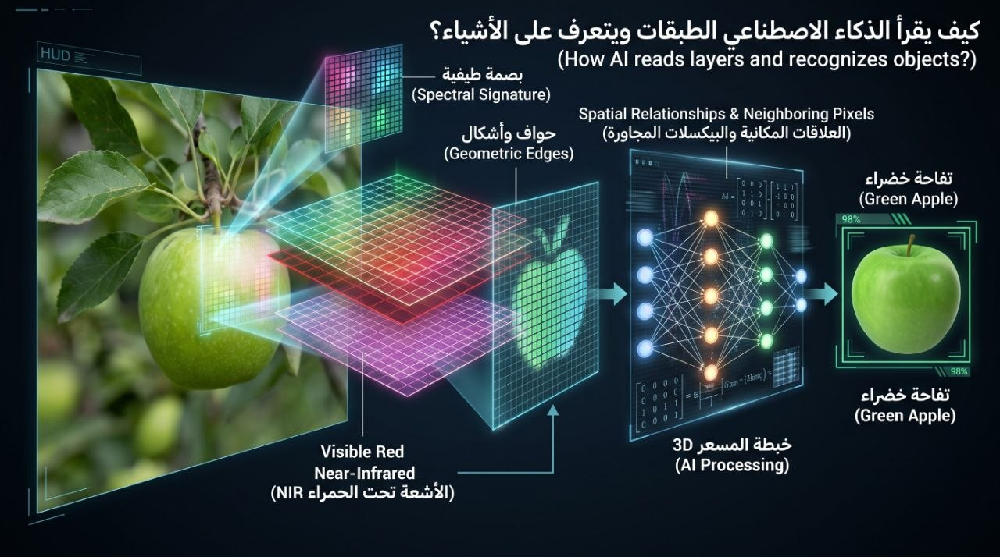
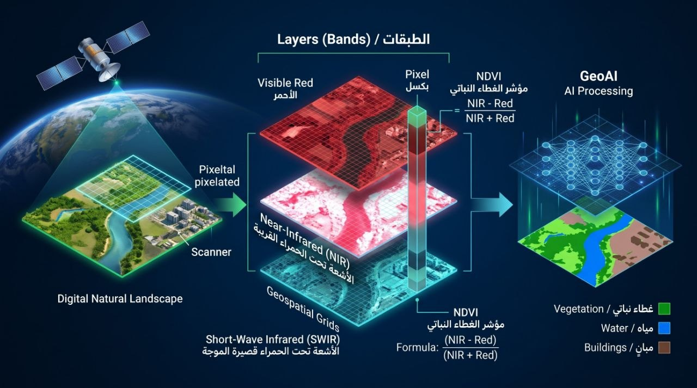
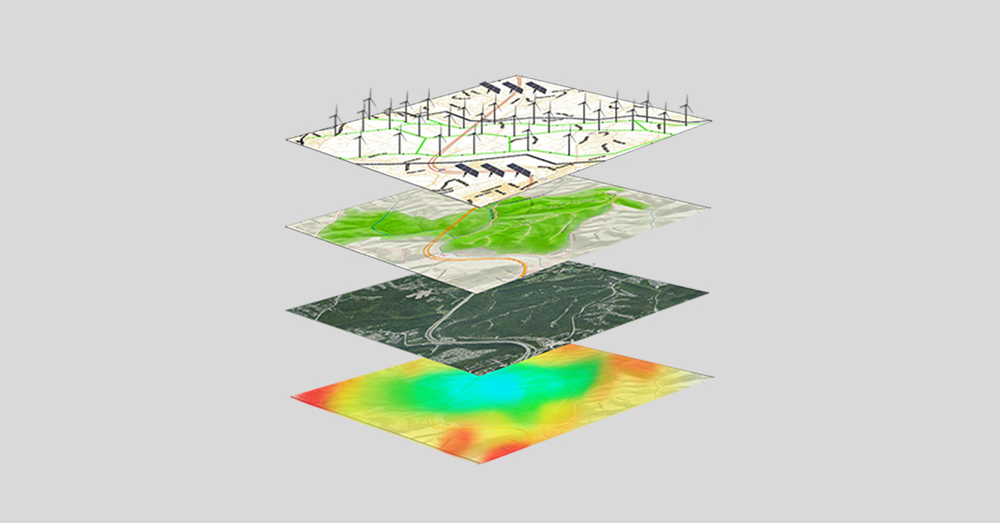

GeoAI
L'Intelligence Artificielle au Service de l'Information Géospatiale
Trois disciplines, une intersection : la GeoAI
Chaque pilier apporte une contrainte que les deux autres rendent féconde.
Géodésie
Le cadre planétaire. Positionner juste tout objet sur la Terre : ellipsoïde, projections, référentiels.
SIG
La base relationnelle. Stocker, relier et interroger les couches géographiques et leurs attributs.
Intelligence Artificielle
La puissance cognitive. Apprendre les patterns et inférer là où la règle manuelle s'arrête.
De l'Espace à la Carte : Comment la GeoAI Analyse un Territoire
Simulation interactive : Acquisition satellitaire (Médéa), réception station sol (ASAL Ouargla) et segmentation IA.
Étape 1 / 4 · Orbite & balayage
Capture satellitaire — Ville de Médéa
Flux complet : capteur optique → station sol ASAL (Ouargla) → prétraitement COG → CNN 3×3 → carte vectorielle. Cliquez une étape de la timeline pour la rejouer.
How AI reads layers and recognizes objects? — green apple

Layers (Bands) — satellite bands / NDVI

Du SIG classique à la GeoAI : changer de paradigme
SIG classique
- ▸ Numérisation manuelle des objets, couche par couche.
- ▸ Calibration et co-registrement pas à pas.
- ▸ Règles statiques écrites par l'expert.
- ▸ Analyse séquentielle, difficile à répéter à l'échelle.
GeoAI
- ▸ Inférence cognitive automatisée sur toute la zone.
- ▸ Alignment appris par vision par ordinateur.
- ▸ Patterns extraits des données, pas pré-écrits.
- ▸ Mise à l'échelle GPU : des millions d'images.
Rupture épistémologique : on ne décrit plus le territoire à la main — on le laisse le modèle lire l'image et déduire la carte.
Avant tout modèle : une donnée propre, calée, lisible
Imagerie satellitaire HD
- ▸ Plurispectre : la lumière révèle la matière.
- ▸ De 10 m (Sentinel-2) au décimètre (Pléiades).
- ▸ Séries temporelles = historique du territoire.
Formats optimisés
- ▸ GeoTIFF : géoréférence embarquée.
- ▸ COG : tuiles, lecture HTTP partielle, pyramides.
- ▸ Catalogage STAC pour l'orchestration.
Co-registrement auto.
- ▸ La vision par ordinateur aligne les prises de vue.
- ▸ Points-clés + homographies, sans GPS précis.
- ▸ SuperGlue : appariement robuste des features.
CNN : des filtres qui apprennent à voir
Inspiré du cortex visuel biologique — un empilement de convolutions transforme les pixels en concepts.
Couche convolutive — des noyaux 3×3 détectent bords, textures et formes.
Profondeur — bords → motifs → objets : la représentation s'affine couche après couche.
Pooling — réduction de dimension et invariance aux déplacements.
Deux modèles stars : U-Net et YOLO
U-Net — dessiner le masque
Chaque pixel reçoit une classe : bâtiments, routes, eau, végétation. Architecture en U, encodeur puis décodeur.
✓ Précision des contours · ✓ Peu de données d'entraînement · ✓ Sortie : masque par classe
YOLO — voir en une passe
Localiser + classifier simultanément, en un seul passage du réseau — idéal pour l'analyse rapide de vastes zones.
✓ Boîtes + classes en temps réel · ✓ Une seule passe forward · ✓ Échelle industrielle
Anticiper : du changement observé au risque prédit
Modélisation spatiotemporelle
Croiser temps et espace : les séries d'images révèlent la dynamique du territoire (croissance urbaine, érosion).
Change Detection
Soustraire deux dates pour révéler les zones transformées — détection automatique des changements.
Cartographie des risques
Cartes prédictives des crues et de l'érosion : prioriser les zones d'intervention avant l'événement.

Fig. — différence d'images : les polygones cyan marquent les changements détectés (inondables / bâti).
Le pipeline complet, de l'image à la carte
Cliquez une étape pour voir son rôle et ses outils.
Acquisition
Collecte des sources : imagerie satellitaire, cadastre, couches SIG existantes et catalogues ouverts (STAC).
Trois défis pour une GeoAI de confiance
Qualité des données
L'apprentissage ne vaut mieux que son étiquetage : annotation coûteuse, biais d'échantillonnage, généralisation entre régions.
Explicabilité — XAI
Cartes de saillance, confiance calibrée : l'aménageur doit comprendre pourquoi le modèle a tracé cette frontière.
Cartographie autonome
Auto-labelling et modèles de fond géospatiaux : la carte se met à jour presque seule, l'humain reste dans la boucle.
Vers une carte qui apprend : modèles de fond géospatiaux + XAI intégrée + expertise humaine.
Fiche du Projet — GeoAI & SIG
Dr. Amel KELLOU
GIS (Geographic Information Systems and Spatial Data)
Architecture, Urbanisme et Métiers de la Ville — Master 1 Smart Cities Engineering (Métiers de la Ville)
Département d'Architecture | Faculté de Technologie | Université Yahia Farès de Médéa (2026 - 2027)
Évaluation Contrôle Continu (CC) — جامعة المدية